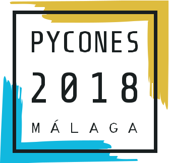
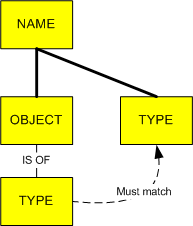
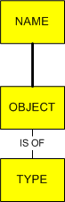

Hola!
David Barragán Merino
Kaleidos.net
 Taiga.io
Taiga.io
Typing
Indicaer el tipo de las "cosas".
Type cheker
Programa encargado de comprobar y aplicar las restricciones de tipos en un código fuente dado.
- Puede actuar en la fase de compilado → static type cheker.
- Pude actuar en runtime → dynamic type cheker.
- type checker != linter
Static typing

Las variables poseen un tipo asociado, normalmente explicito aunque a veces inplicito (inferido).
La comprobación de tipos se realiza en tiempo de compilación para poder garantizarlo.
- Ejemplos: Java, Haskell, Julia, Rust, C...
👍
- Incrementa la semántica de nuestro codigo.
- El código está mejor documentado.
- Ahorro de comprobaciones manuales de tipo.
- Ahorro de tests.
- Detección temprana de errores de tipo.
- El compilador puede realizar optimizaciones de código.
👎
- Incremento de tiempo en el proceso editar-compilar-ejecutar-depurar.
- No realizan todas las verificaciones de tipos (downcasting).
Dynamic typing

Las variables no poseen un tipo asociado, si no que lo obtienen del valor que contienen en cada momento.
La comprobación de tipos se realiza en tiempo de ejecución.
- Ejemplos: Python, Perl, Ruby, ¿Lisp?, Javascript...
👍
- Facilita el proceso de codificación.
- Menor tiempo en el proceso editar-compilar-ejecutar-depurar.
- Flexibilidad para adaptarse a los cambios de requisitos.
- Facilita la gestión de situaciones en la que el típo sólo se conoce en tiempo de ejecución.
- Ideal para programación interactiva.
👎
- Hay errores de tipo que no se detectan hasta su ejecución.
- Hay que documentar más.
- Hay que añadir comprobaciones manuales de tipos.
- Hay que testear más.
- En proyectos grandes resulta dificil entender el código → falta de semántica
¿Qué hace este código?
def validate_entries(entries):
for entry in entries:
entry.data.validate()
- `grep validate` y a buscar su definición → 154 definiciones
- debemos averiguar el típo del objeto de `validate()`
- debemos averiguar el tipo de `entry.data`
- para ello debemos saber qué es `entry`
- pero ¿qué es `entries`? ¿sera un...
- ..._parámetro_? → busca la llamada y...
- ..._valor de retorno de una función_? → busca la definicion de la función y...
- ..._un atributo de clase_? → busca la definición de la clase y...
Gradual typing
"Gradual Typing for Functional Languages"
por Jeremy G. Siek y Walid Taha (2006)
Se permite tanto static typing como dynamic typing en el código.
Utilíza el que quieras cuando quieras.
- Ejemplos: TypeScript, Groovy, Clojure, Lua, (annotated) Python,...
Definición informal (2 de 2)
Hay 3 reglas para conocer la consistencia:
- Un tipo
t1es consistente con un tipot2sit1es un subtipo det2(Y no al contrario). Anyes consistente con cualquier typo (Anyno es un subtipo de cualquier tipo).- Cualquier tipo es consistente con
Any(cualquier tipo no es un subtipo deAny).
class Employee: ...
class Manager(Employee): ...
worker = Employee() # tipo: Employee
worker = Manager() # OK!: regla 1
boss = Manager() # tipo: Manager
boss = Employee() # Error
something: Any # tipo: Any
worker = something # OK: regla 2
something = boss # OK: regla 3
Gradual typing
en Python
Finalidad
✔
- Mejorar la legibilidad del código a los humanos.
- Sintaxis estandar para la anotación de tipos.
- Facilitar el análisis estático y la refactorización del código python.
✖
- Chequeo de tipos en runtime.
- Optimización de rendimiento, basado en el tipado.
La historia... y los PEPs
- 1998 - 2004:
- Debate sobre interfaces
- Ponencia de Guido con ejemplos de function annotations
- Post en Artima, Adding Optional Static Typing to Python
- 2006: Function Annotation PEP 3107 (Python 3.0)
- 2012: mypy (por Jukka Lehtosalo): el type cheker de refencia.
- 2014: Type Hints PEP 484 (Python 3.5)
- Literature overview for Type Hint PEP 482
- Theory of Type Hint PEP 483
- Implementa el módulo typing
(en un estado provisional, sin introducir cambios en el core del lenguaje). - 2016 - hoy:
Type Hinting syntax
en Python
Primitivas
int # integer
float # floating point number
complex # complex number
# (complex ~ float ~ int)
bool # boolean value
str # unicode string
bytes # 8-bit string
Variables (PEP 526)
El tipado de las variables puede ser implicito o explicito
a = 3.4 # implicit (float)
b: float = 3.4 # explicit
l: List[int] = [] # explicit
class MyClass:
s: str = 'Gazpachito'
n: int
b: ClassVar[bool] = True
def __init__(self):
self.o: str = 'Espeto'
s = MyClass()
s.s = 1 # Error: Incompatible types in assignment (expression has type "int",
# variable has type "str")
s.o = 2.0 # Error: Incompatible types in assignment (expression has type "float",
# variable has type "str")
MyClass.b = True
s.b = True # Error: Cannot assign to class variable "b" via instance
Any
from typing import Any
something: Any = 1
something = 's'
something = False
something = None
Funciones y métodos
from typing import Any, List
def foo(a: int, b: float, c: List[bool] = [], *d: Any, **e: str) -> bool:
...
foo.__annotations__
# Out: {'a': int,
# 'b': float,
# 'c': typing.List[bool],
# 'd': typing.Any,
# 'e': str,
# 'return': bool}
Clases
- Las clases de Python son tipos (las instancias de sus subclases son consistentes)
- En python 3.7 se arregla el problema con las forward references (PEP 563)
- Ahora encontraras type errors si accedes a métodos que no existen.
→ No más errores en runtime por typos!!
class Foo:
def do_something(self, i: int):
...
class Bar:
def run(self, x: Foo):
x.od_something(1) # Error: "Foo" has no attribute "od_something"; maybe "do_something"?
Union (1 de 2)
Union sirve para representar un set de tipos válidos.
from typing import Union
def mul(n: int, m: Union[str, int]):
return n * m
mul(5, 1) # -> 5
mul(5, '*') # -> *****
mul(5, 2.0) # Error: Argument 2 to "mul" has incompatible type "float";
# expected "Union[str, int]"
Union (2 de 2)
from typing import Any, Optional, Union
assert Union[str] == str
assert Union[str, Any] == Any
assert Union[str, str, int] == Union[str, int]
assert Union[int, str] == Union[str, int]
assert Union[Union[int, str], float] == Union[int, str, float]
assert Union[str, int, None] == Optional[Union[str, int]]
Optional
Optional sirve para indicar que ese valor puede ser None.
from typing import Optional
z: Optional[str] = None
z = 'text'
Collections (1 de 4)
El módule typing contiene generic types de las colecciones más comunes.
from typing import List, Dict, Set, Tuple
List[str] # list of str objects
Dict[str, int] # dictionary from str to int
Set[str] # set of str objects
Tuple[int, int, int] # a 3-tuple of ints
Tuple[int, ...] # a variable length tuple of ints
Collections (2 de 4)
from typing import List, Set, Union
list_a: List[float]
list_a = [1, 1.0, 2.0]
list_a = ['a', 1.0, 2.0] # Error: List item 0 has incompatible type "str"; expected "float"
list_b: List[Union[float, str]] = [1, 1.0, 'a']
set_a: Set[int] = {1, 2, 3}
set_a = {1, 2, 'a'} # Error: Argument 3 to <set> has incompatible type "str";
# expected "int"
Collections (3 de 4)
Tambien hay namedtuples() con la nueva sintaxis.
from typing import NamedTuple
class Employee(NamedTuple):
"""Represents an employee."""
name: str
id: int = 3
def __repr__(self) -> str:
return f'<Employee {self.name}, id={self.id}>'
Collections (4 de 4)
Tambien están las abstract collections, definidas en collections.abc (útiles para el duck typing).
from typing import Mapping, MutableMapping, Sequence, MutableSequence
Mapping[str, str] # a mapping from strings to strings
MutableMapping[str, str] # a mutable mapping from strings to strings
Sequence[int] # a sequence of integers
MutableSequence[int] # a mutable sequence of integers
Callable
Para definir callbacks, funciones que se pasan como parámetro.
Callable[[int, int], str]
Callable[..., str]
from typing import Callable
def feeder(get_next_item: Callable[[], str]) -> None:
...
def async_query(on_success: Callable[[int], None],
on_error: Callable[[int, Exception], None]) -> None:
...
TypeVar
Sirven para declarar variables de tipo.
from typing import TypeVar
AnyStr = TypeVar('AnyStr', str, bytes) # can be str or bytes
def concat(x: AnyStr, y: AnyStr) -> AnyStr:
return x + y
concat('aaa', 'bbb')
concat(b'aaa', b'bbb')
concat('aaa', b'bbb') # Error: Value of type variable "AnyStr" of "concat" cannot be "object"
bound, ni lo de las propiedades covariancia, contravariancia e invarianciade los tipos complejos, que no te va a dar tiempo. Más info en PEP 484: Covariance and contravariance.
Generic Clases
Son clases con uno o más tipos arbitrarios (TypeVar) que serán asignados con su instanciación.
from typing import Generic, List, TypeVar
T = TypeVar('T') # Can be anything
class Stack(Generic[T]):
def __init__(self) -> None:
self.items: List[T] = []
def push(self, item: T) -> None:
self.items.append(item)
def pop(self) -> T:
return self.items.pop()
def empty(self) -> bool:
return not self.items
stacki = Stack[int]()
stacki.push(1)
stacki.push('n') # Error: Argument 1 to "push" of "Stack" has incompatible
# type "str"; expected "int"
Y mucho, mucho más...
- Ficheros stub (.pyi)
- Sobrecarga de funciones (
@overload) - Casting
- Tipos para IO
- Tipado por RegEx
- Decorados
- Corrutinas
- Metaprogramacion
- Protocolos (PEP 544, para el static duck typing)
- ...
Conclusiones
- Las anotaciones mejoran enormemente el proceso de desarrollo y la calidad del código aportando muchísima semantica.
- Hacen que el código sea más legible.
- Ayudan a detectar errores antes del _runtime_.
- Reducen el número de tests y de asserts.
- Mejorar nuestros editores y otras herramientas de análisis de código.
- incluso puede llegar a mejorar la performance del código
¿en un futuro no muy lejano? (Cython, Pyston, MypyC...)
- incluso puede llegar a mejorar la performance del código
- Los
type hintsson poco invasibos y pythonicos - PEP 20 "Explicito es mejor que implícito"